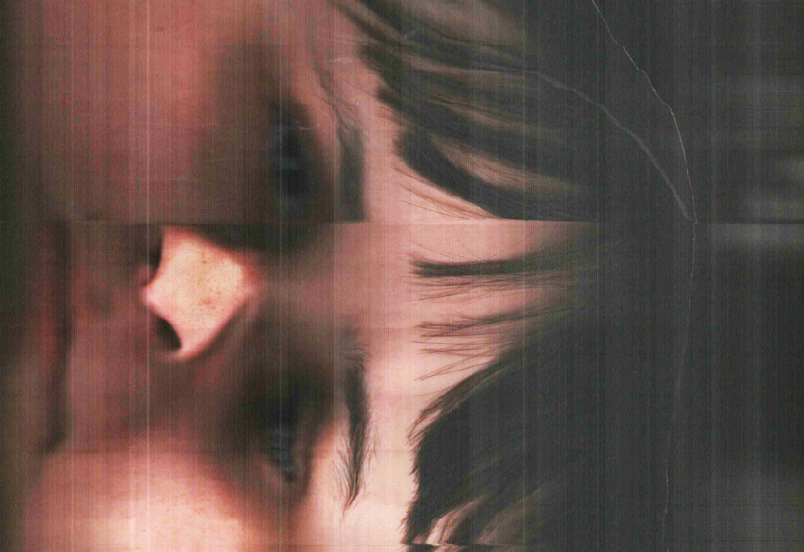

Garibaldi 2025
Tutto è cominciato con uno scanner portatile e tanta voglia di capire cosa succede quando provi a catturare il mondo in tre dimensioni. Abbiamo iniziato con oggetti semplici: una bottiglia, una scarpa, un caffè (finito troppo presto). Poi, come ogni gruppo di studenti curiosi, ci siamo detti: “E se provassimo con le facce?”

Rosa Chiavazzo scannerizzata
Errore. Le facce non collaborano. Lo scanner sembrava andare in panico davanti a un naso, una mascella, un’espressione. Il risultato era sempre qualcosa a metà tra una scultura incompiuta e un incubo digitale. Così abbiamo capito: la tridimensionalità umana era fuori portata. Serviva un’altra idea. E allora abbiamo fatto quello che si fa nei momenti di crisi: abbiamo ribaltato tutto. Se non possiamo prendere una persona in 3D, perché non schiacciarla in 2D? Non metaforicamente — anche se ogni tanto qualcuno se lo sarebbe meritato — ma visivamente. Nasce così il nostro esperimento con la panoramica inversa. Funziona un po’ come un panorama classico, solo che invece di muovere la fotocamera attorno alla scena, fissi la fotocamera e fai ruotare la scena — o meglio, la persona. Detto così sembra semplice. In realtà sembrava di coreografare una danza lenta davanti a una macchina fotografica muta. Ogni rotazione diventava un video da smontare frame per frame.

Il busto del LAB inverso

Ludovico e Mariasole
Abbiamo preso uno di questi video e l’abbiamo sezionato dentro Adobe Premiere. Ogni fotogramma veniva salvato, poi da ciascuno ritagliavamo circa 20 pixel dal centro. Tutti questi ritagli, messi in sequenza, generavano una nuova immagine: la nostra prima panoramica inversa. Era stortissima. Ma ci ha fatto urlare di gioia. Avevamo creato una specie di ritratto dinamico, disturbante e poetico. Il problema era che ci stavamo distruggendo le dita a forza di clic. Così ci siamo alleati con un alleato silenzioso e molto paziente: ChatGPT. Con il suo aiuto abbiamo scritto un codice che faceva tutto al posto nostro: esportava i frame, li ritagliava, li ordinava, li ricomponeva. Poi, con una certa eleganza, cancellava tutto il superfluo. Ci sembrava quasi magia.

Varie panoramiche inverse NTA

Varie panoramiche inverse NTA
...
Ecco il codice:
import os
import glob
import subprocess
import cv2
import numpy as np
import shutil
import argparse
from tqdm import tqdm
def extract_frames(video_path, frame_folder):
os.makedirs(frame_folder, exist_ok=True)
ffmpeg_cmd = [
"ffmpeg",
"-i", video_path,
"-qscale:v", "2",
os.path.join(frame_folder, "frame_%04d.jpg")
]
result = subprocess.run(ffmpeg_cmd, capture_output=True, text=True)
if result.returncode != 0:
raise RuntimeError(result.stderr)
def create_panorama(frame_folder, output_path, stripe_width=5, stripe_position="center"):
file_list = sorted(glob.glob(os.path.join(frame_folder, "*.jpg")))
if not file_list:
raise RuntimeError("No frames found.")
sample = cv2.imread(file_list[0])
height = sample.shape[0]
panorama_width = stripe_width * len(file_list)
panorama = np.zeros((height, panorama_width, 3), dtype=np.uint8)
for idx, file in enumerate(tqdm(file_list, desc="Building", unit="frame")):
img = cv2.imread(file)
if img is None:
continue
w = img.shape[1]
if stripe_position == "center":
x = w // 2
elif stripe_position == "left":
x = 0
elif stripe_position == "right":
x = w - stripe_width
else:
x = w // 2
stripe = img[:, x:x + stripe_width]
panorama[:, idx * stripe_width: (idx + 1) * stripe_width] = stripe
os.makedirs(os.path.dirname(output_path), exist_ok=True)
if not cv2.imwrite(output_path, panorama):
raise IOError("Failed to save panorama.")
def clean_up(folder_path):
shutil.rmtree(folder_path, ignore_errors=True)
def main():
parser = argparse.ArgumentParser()
parser.add_argument("--video", required=True)
parser.add_argument("--output", default="output/panorama.jpg")
parser.add_argument("--temp", default="temp_frames")
parser.add_argument("--width", type=int, default=5)
parser.add_argument("--position", choices=["left", "center", "right"], default="center")
parser.add_argument("--keep", action="store_true")
args = parser.parse_args()
try:
extract_frames(args.video, args.temp)
create_panorama(args.temp, args.output, args.width, args.position)
finally:
if not args.keep:
clean_up(args.temp)
if __name__ == "__main__":
cv2.setNumThreads(1)
main()
Ma, come spesso accade, il soggetto umano ci ha stancati: troppo movimento, troppa imprevedibilità. Così abbiamo rivolto lo sguardo altrove — ai percorsi fatti a piedi, alle facciate degli edifici, alle piazze. Più specificamente, a Piazza Garibaldi, a Napoli. Ogni ripresa era una storia compressa. Lineari o contorte, con o senza stabilizzatore — poco importava. Stavamo trasformando il movimento nello spazio in una nuova narrazione visiva.

Panoramica

Panoramica

Panoramica

Panoramica

Panoramica
Alla fine, ci siamo trovati con una serie di immagini che non sembravano fotografie, né video. Erano qualcos’altro. Tracce. Mappe. Esperimenti. Forse anche autoritratti, se uno ci guarda con l’occhio giusto.
A un certo punto ci siamo chiesti: perché non fare una panoramica girando la piazza a piedi? E così è stato. Abbiamo percorso tutta Piazza Garibaldi, riprendendo una dopo l’altra tutte le facciate.

PanoramicaG1

PanoramicaG2

PanoramicaG3

PanoramicaG4
Come spesso succede nei progetti belli, non sapevamo bene cosa stavamo facendo, ma sapevamo che ci piaceva farlo.